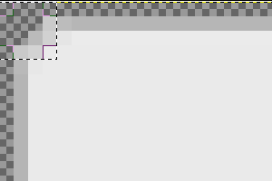

Image clipping and combining¶
qooxdoo integrates the support for clipping and combining images in the framework and both features are heavily used within the framework mainly in the different themes like appearance or decoration theme.
Setup¶
Note
To be able to use image clipping and combining you need an installed ImageMagick package. The latest version known to work is 6.6.1.
To use the two features you have to create a config file which can be used by the generator to clip or combine images. Altough it is possible to integrate the jobs for clipping and combining in your config.json file of your application, the better way is to create an own config file for the image manipuations to separate it from the application configuration.
Note
It is recommended to use the same file name for the config file as in the core framework to better reflect its purpose: image.json
At the first look the configuration file for the image jobs is basically the same as a normal application configuration file.
{
"jobs" :
{
"common" :
{
"let" :
{
"RESPATH" : "./source/resource/APPLICATION_NAME"
},
"cache" :
{
"compile" : "../../cache"
}
}
}
}
The described common is used to setup the basic settings which are used by the specific jobs image-clipping and image-combine which are described at the following sections.
Image clipping¶
Clipping images is needed whenever you have a base image, e.g. a complete image for your button with rounded borders, to strip them into several parts.
Note
Mainly, the clipping is needed to prepare the source image for the use as a baseImage for the grid decorator. All clipped images of the core framework are used as baseImages for grid decorators.
"image-clipping" :
{
"extend" : ["common"],
"slice-images" :
{
"images" :
{
"${RESPATH}/image/source/groupBox.png" :
{
"prefix" : "../../clipped/groupBox",
"border-width" : 4
}
}
}
}
Each entry in the images block represents one source image to clip.
- value of the key has to be the path to this image
- the prefix entry will set the filename for all of your splitted images. The resulting images will follow the rule prefix+imagepart where imagepart will be e.g. tl or br (for top-left and bottom-right)
- the entry border-width is to define the part of the image which the rounded border occupies. If you look at your baseImage you can determine the "border-width" by select a rectangle (which your graphic tool) which occupies the rounded border completely
For the case border-width: One image says more than thousand words :)

The selection rectangle has the size of 4 x 4 pixels, thus the border-width value of 4. Differing border width values for each of the four sides are also supported. In that case, the value for border-width must be an array containing the four values in this order: top, right, bottom, left.
Note
For more information see the slice-image section.
Image combining¶
Opposite to image clipping the image combining takes multiple images as source and generates one combined image out of them.
"image-combine" :
{
"extend" : ["common"],
"combine-images" :
{
"images" :
{
"${RESPATH}/image-combined/combined.png":
{
"prefix" : [ "${RESPATH}" ],
"layout" : "vertical",
"input" :
[
{
"prefix" : [ "${RESPATH}" ],
"files" : [ "${RESPATH}/image/clipped/groupBox*.png" ]
}
]
}
}
}
}
Basically the structure is the same as for the image-clipping jobs. Let's take a look at the details.
- value of the key has to the path of the combined image to create
- files is an array which takes the several images to combine as arguments - the use of wildcards like * or [tb] are allowed
- the layout key takes the two possible values horizontal or vertical and determines the alignment of the source images inside the combined images
Note
The layout depends on the sizes of the source images. Best suited for combining are always images with the same sizes. For most cases the horizontal layout is the better choice
Note
For more information take a look at the combine-images section.
Run image jobs¶
If you are finished with the definition of your images to clip and/or to combine you can use the generator to actually let them created for you.
./generate.py -c image.json image-clipping
./generate.py -c image.json image-combine
If you include the following job in your image.json jobs list
"images" :
{
"run" : [ "image-clipping", "image-combine" ]
},
the execution of
./generate.py -c image.json images
will run both jobs at once.
Benefits¶
There are several benefits for setting the image clipping and combining up
- less HTTP requests meaning better performance when using combined images
- widgets using the grid decorator are easier to use. If you do not use clipping you have to slice the baseImage and name the parts manually
- state changes are faster with combined images as the browser does not have to change the source if the displayed image. Instead he only changes the value of the CSS property background-position to display the desired part of the combined image